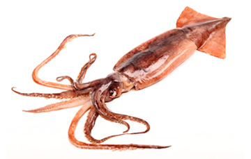

Los téutidos (Teuthida) son un orden de moluscos cefalópodos conocidos vulgarmente como calamares (debido a su "hueso" calcáreo, conocido como pluma o caña = calamus en latín).1 Contiene dos subórdenes, Myopsina y Oegopsina (el último incluye a Architeuthis dux, el calamar gigante y a Mesonychoteuthis hamiltoni o calamar colosal). Son animales marinos y carnívoros.
Los calamares son moluscos de cuerpo blando cuyas formas evolucionaron para adoptar un estilo de vida depredador activo. La cabeza y las extremidades del calamar están en un extremo de un cuerpo largo, y este extremo es funcionalmente anterior, guiando al animal a medida que se desplaza por el agua. Un conjunto de ocho brazos y dos tentáculos distintivos rodean la boca; cada apéndice toma la forma de un hidrostato muscular y es flexible y prensil, por lo general con ventosas en forma de disco.2 Las ventosas pueden estar directamente sobre el brazo o ser pedunculadas. Sus bordes están endurecidos con quitina y pueden contener diminutos dentículos similares a dientes. Estas características, además de una musculatura fuerte y un pequeño ganglio debajo de cada ventosa que permite el control individual, proporcionan una adherencia muy poderosa para agarrar a la presa. Algunas especies tienen ganchos y tentáculos en los brazos, pero su función no está clara.3 Los dos tentáculos son mucho más largos que los brazos y son retráctiles. Las ventosas se limitan a la punta espátula del tentáculo, conocida como manus.2
« Atras